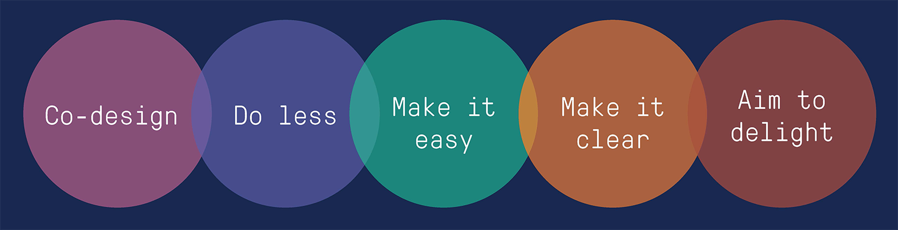

Created by Richard Collinson, last modified on Jan 23, 2018
Guiding design principles
(excerpt from DM#10004699)

Co-design | Do less | Make it easy | Make it clear | Aim to delight |
|---|
1.1 Design for customers, with customers Consider the task that customers need to complete,
and focus on streamlining the process. Business
needs must be balanced with customer needs. Test
with customers from the start. | 2.1. Make the experience seamless Make the look and feel of digital services
consistent, no matter which backend systems are
in use. Digital services should look and feel
the same as MVGA. In the customer’s eyes it is
all part of the same experience. | 3.1. Design for mobile first
Increasingly customers will be
transacting on mobile devices. Designing
mobile-first forces us to consider speed
and simplicity on a smaller screen and
to solve for the worst-case scenario. | 4.1. Be transparent Customers are more comfortable providing
personal information if they know why it’s
needed and how it will be used. Be clear and
transparent about why we need what we need and
how it will enhance their experience. | 5.1 Write in a straightforward, friendly way Write like a helpful concierge. Be clear
and concise, but not robotic. Customers
need useful and actionable information,
and should be spoken to as people. |
1.2 Design with subject matter experts
Services cannot be made digital in isolation of
their dependencies. Co-own work with subject matter
experts, involving them early and often to ensure
that requirements and limitations are understood. | 2.2. Interrogate every field Examine the purpose of every piece of
information we ask from a customer. Reduce
the steps required to complete a service to
the absolute sensible minimum. Balance the
business need for a piece of information
with the customer benefit. | 3.2. Make services easy to find A customer’s experience of a service begins
before the first screen. Consider the way that
customers will find it, via google or navigating
through the website. Once a customer finds the
service, let them start straight away. | 4.2. Follow best practice Customers expect things to work in a
familiar way. Follow best practices. | 5.2 Be personal Give customers information relevant to
their specific circumstances through a
communication channel that will be most
appropriate. Use the information we have
on them to improve their experience. |
| 2.3. Leverage existing services Exhaust all opportunities to fix a barrier for
customers — even beyond digital. Use process
improvement to help make customer experience
better. Look for opportunities to fix things at a
back-end level by sharing ideas across City of
Melbourne and learning from other organisations. | 3.3. Help customers get it right Ensure the requirements for completing a
service are clear from the start. Embed
validating questions as part of a form to
ensure that customers don’t spend unnecessary
time on something they are not eligible for. | 4.3. Design within the ecosystem Fit in, don’t stand out. Customers need
easy to use services and will understand
things that are familiar. Look to service
providers from parallel and other
industries for inspiration. | 5.3 Close the loop Provide assurance that a service has
been completed, and give customers an
easy opportunity to fix things if they
have gone wrong. |
| 2.4. Design in a modular way A digital service should be made up of
discrete modules that interact with each
other to gather the correct information.
Syndicate common functionality rather than
recreate it for each service. | 3.4. Minimise decision points Minimise the amount of decisions a
customer must make at each point. Let
them focus on each segment of a service.
Make sure each step has one clear action. |
|
|
{kind=link}